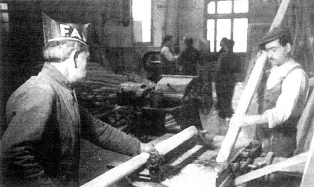

L'organisation anarchiste espagnole repose sur un principe simple : la décision part d'en bas. Les comités exécutent ce que décident les assemblées et les congrès ; leurs membres sont mandatés et révocables.
La CNT et la FAI
La CNT regroupe travailleuses et travailleurs dans des syndicats uniques d'industrie : tous les métiers d'une même branche (bâtiment, textile, transports…) dans un seul syndicat, pour ne pas se diviser. Les syndicats d'une ville forment une fédération locale, puis une confédération régionale, puis la confédération nationale. Il y a très peu de permanents rétribués.
La FAI est une organisation à part, faite de petits groupes d'affinité de quelques militantes et militants qui se connaissent et se font confiance. Ses membres sont aussi à la CNT, où ils défendent l'orientation anarchiste.
La collectivité agricole
Dans les villages d'Aragon, de Catalogne, du Levant ou de Castille, les paysans réunis en assemblée générale décident de mettre en commun les terres des grands propriétaires, souvent aussi les leurs, avec le bétail et les outils. Celles et ceux qui préfèrent rester « individualistes » gardent la terre qu'ils peuvent travailler seuls, sans employer personne.
- L'assemblée élit un comité, révocable et non payé, qui coordonne le travail.
- Le travail se fait par groupes de dix à quinze personnes, avec une personne déléguée.
- Le magasin communal remplace les commerces. Selon les villages, on y paie avec un salaire familial (selon la taille du foyer), avec des bons locaux, ou l'argent est purement aboli.
- Les excédents servent à acheter des machines, à ouvrir des écoles, à soigner gratuitement, et à ravitailler le front.
- Les villages se fédèrent par comarque (canton), puis au niveau régional : la Fédération des collectivités d'Aragon naît au congrès de Caspe en février 1937.
Les villes : l'autogestion des entreprises

À Barcelone, en juillet 1936, beaucoup de patrons ont fui. Les travailleuses et travailleurs réunis en assemblée d'entreprise élisent un comité, qui associe souvent une technicienne ou un technicien. Les tramways, le métro, le téléphone, l'eau, le gaz, l'électricité, les boulangeries, les spectacles tournent ainsi pendant des mois.
- Selon les témoins de l'époque, les tramways barcelonais, remis en état par leur personnel, transportent davantage de passagers qu'avant.
- Le syndicat d'industrie coordonne les entreprises d'une même branche, ferme les plus vétustes et regroupe la production.
- En octobre 1936, un décret du gouvernement catalan reconnaît les collectivisations, mais commence aussi à les encadrer.
Le Conseil d'Aragon
D'octobre 1936 à août 1937, l'Aragon libéré par les colonnes est administré par un Conseil régional de défense à majorité libertaire, présidé par Joaquín Ascaso. C'est le seul territoire où l'organisation anarchiste remplace presque entièrement l'ancien appareil d'État. Sa dissolution par le gouvernement républicain, en août 1937, ouvre la voie au démantèlement de nombreuses collectivités.
À retenir
- Assemblée souveraine, comités révocables, fédération de bas en haut.
- Des millions de gestes concrets : semer, cuire le pain, faire rouler les trams, ouvrir des écoles.
- Suite : milices, Mujeres Libres et débats.
Sources et pour aller plus loin
Lire
- Espagne libertaire 1936-1939, Gaston Leval.Un anarchiste qui a parcouru les collectivités pendant la révolution raconte leur fonctionnement, village par village.
- L'Autogestion dans l'Espagne révolutionnaire, Frank Mintz.L'étude de référence sur les collectivités agricoles et industrielles.
- La Conquête du painNotre fiche : le livre qui a inspiré des générations d'anarchistes espagnols.
Sur le web
- La CNT espagnoleLe grand syndicat anarchiste, plus d'un million de membres en 1936.
- La révolution sociale de 1936Les collectivisations en détail.
Dossier rédigé par la bande à Mamie à partir de travaux d'historiennes et d'historiens et de textes des mouvements concernés. Libre de reproduction.